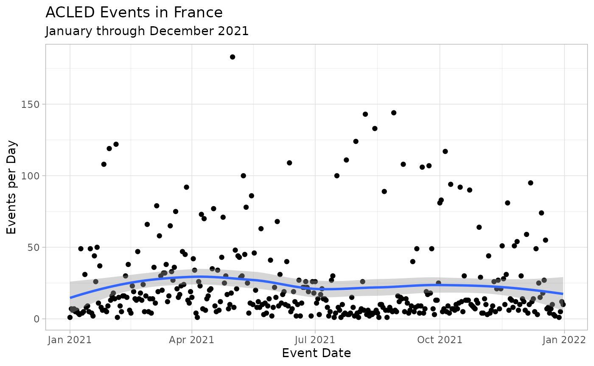
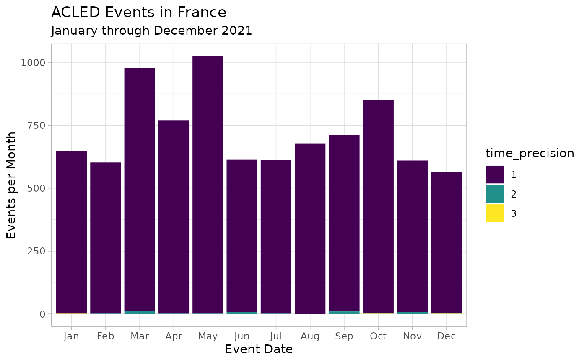
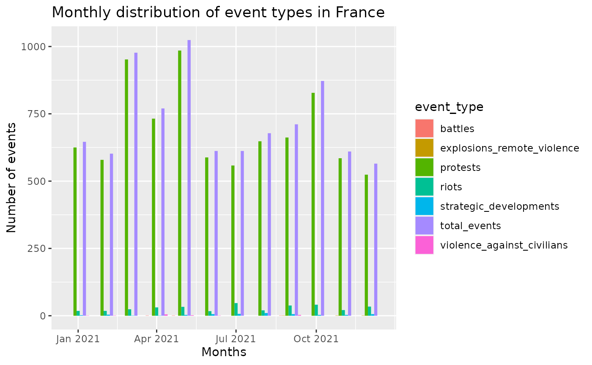

Dates are a necessary component of each ACLED event. ACLED events are atomic, as events are coded by day; if a military campaign in an area starts on March 1, 1999 and lasts until March 5, 1999 with violent activity reported on each day, this is coded as five different events in ACLED, with a different date for each entry. This episode would not be entered as a single campaign of violence. This allows ACLED to record the exact number of active days. Events where the source material notes that they occurred in the space of three months – like long-running protests – are only coded for the days in which reported activity took place (not as 90+ days). This avoids over-counting event occurrence.
There are three types of temporal information for each ACLED event:
1. event_date: the date of each event in yyyy-mm-dd
format; 2. year: the year of each event in yyyy format; 3.
time_precision: the temporal precision of each event; 4.
timestamp: Unix timestamp on when the data was
requested.
When it comes to event_date, ACLED utilizes the sources’
information to determine the date of the event, and depending on how
sources report on the date of the event, we assign a different
time_precision (find more information below). The year
column is an auto generated column based of the event_date.
Finally, timestamp is a particularly useful column to
maintain your data set updated (see our guide), as it allows
you to have a reference point from where to gather new events, and check
for deleted events.
Precision Codes
As mentioned above, when recording event’s dates ACLED utilizes
different precision codes, stored in the time_precision
column, to highlight how accurate such date is. The precision codes are
assigned as follows:
1. If sources include an actual date of an event, a time precision
code of “1” is recorded. 2. If sources note that an event happened
during a specific week or in the weekend, time precision equals “2” and
the middle of that week (or the weekend) is used as the reference date.
3. If sources note only that an event took place within a particular
month, without reference to the particular date, the month’s mid-point
is chosen as event_date unless the beginning or end of the
month is noted (in which case, the first and last date are used,
respectively) and “3” is noted as the time_precision.
| time_precision | |
|---|---|
| 1 | Actual event date |
| 2 | Within specific week/weekend |
| 3 | Within a particular month |
ACLED Week and acledR
ACLED’s week is not like “normal” weeks, as we follow the submission process of the project. This means that ACLED’s week starts in Saturday, and finishes on Friday. For that matter, current and future functions of the project will utilize this range (Sat-Fri) to define what constitutes a week. The reason for this decision lies on the efforts from the team at ACLED to avoid pitfalls on how we analyse ACLED data. If researchers would like to use a “normal” week (Monday-Sunday), they should be aware that data collection in ACLED occurs on Saturday, thus, they may be have incomplete data for the proceeding week.
acledR Example
To explore the uses of time in ACLED’s data, we can look at the following example analyzing France’s events throughout 2021.
acled_access(email = "acledexamples@gmail.com", key = "M3PWwg3DIdhHMuDiilp5") # This is an example, you will need to input your credentials.
#> $Success
#> [1] "Authorisation accepted"
df_france <- acled_api(countries = c("France"),
start_date = "2021-01-01",
end_date = "2021-12-31",
monadic = F,
prompt = FALSE)Now that we have gathered our data, we want to explore how precise are the event dates and which are our floor and celling date (min/max) in our data frame.
df_france %>%
janitor::tabyl(time_precision) %>% # Summarize data groupped by time_precision
janitor::adorn_rounding(2)
#> time_precision n percent
#> 1 8633 0.99
#> 2 44 0.01
#> 3 3 0.00
paste0("Earliest Date: ", as.character(min(df_france$event_date)))
#> [1] "Earliest Date: 2021-01-01"
paste0("Latest Date: ", as.character(max(df_france$event_date)))
#> [1] "Latest Date: 2021-12-31"As we can see, our data is very precise, with 99% being
time_precision 1, followed by time_precision
2, and finally time_precision 3. This follows the efforts
in ACLED to be precise when managing dates, and make our best effort to
find the date of the event. It would be very rare to find a data set
where time_precision 2 is the most present, let alone
time_precision 3.
Next we move to do one of the best analysis we can do with ACLED’s data, time-series.
df_france %>%
group_by(event_date) %>%
tally() %>%
ggplot(aes(x = event_date, y = n)) +
geom_point() +
geom_smooth()+
theme_light() +
labs(x = "Event Date",
y = "Events per Day",
title = "ACLED Events in France",
subtitle = "January through December 2021")
One of the things that we are interested in looking first is the number of events per day in France throughout 2021. From what we see in our plot, while throughout moments of the year this number appears to spike up and down - like on the 1st of May where there were 183 events - the trend line remains fairly stable. ACLED’s data is particularly fitted for this as our precise use of dates means that we can have a continuous monitoring of a given country throughout time.
However, we would like to go slightly more specific, by looking at the divergence across months. Basically, we want to explore, which is the most volatile month.
df_france %>%
group_by(month = lubridate::floor_date(event_date, "month",
week_start = getOption('lubridate.week.start', 6))) %>%
tally() %>%
ggplot(aes(x = month, y = n)) +
geom_line(size=1.2)+
# geom_bar(stat = "identity") +
theme_light() +
labs(x = "Event Date",
y = "Events per Day",
title = "ACLED Events in France",
subtitle = "January through December 2021")
With this we can see that May 2021 was the month hosting the biggest number of events, with 1024. That should hardly be a surprise, considering that it was also on the 1st of May that we saw the highest number of daily events. However, what it is more interesting perhaps is that the next highest peak was March, and April being the 4th highest peak, which would perhaps clash with what the previous daily analysis showed. In the previous plot one could get the impression that it was the latter months which were the most volatile (they had more notable peaks than the days prior to May).
Lets try to add more nuance to our analysis, and lets analyse the count of different event_types across months.
french_counts <- generate_counts(df_france,
unit_id = "country",
time_id = "event_date",
time_target = "month")%>%
select(-country) %>%
pivot_longer(!event_month,
names_to = "event_type",
values_to = "n_events")
ggplot(french_counts,
aes(x = event_month, y = n_events,
fill = event_type, text = event_type))+
geom_bar(stat = "identity",
position = "dodge")+
labs(title = "Monthly distribution of event types in France",
x = "Months",
y ="Number of events")
As we can see from the graph, France’s 2021 was primarily riddled with protests. However, this is hardly enough to conclude anything about France. In another vignette we go through this example and compare it with the regional averages.